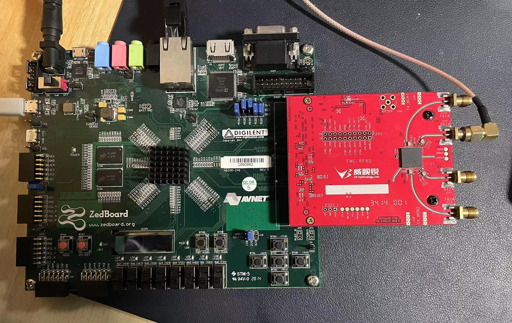
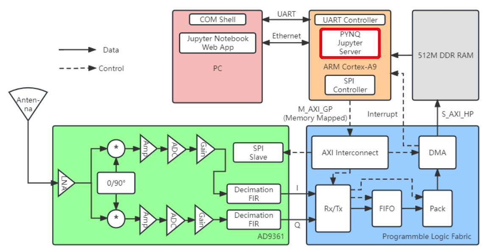
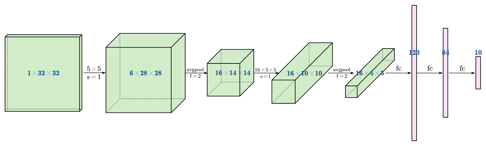
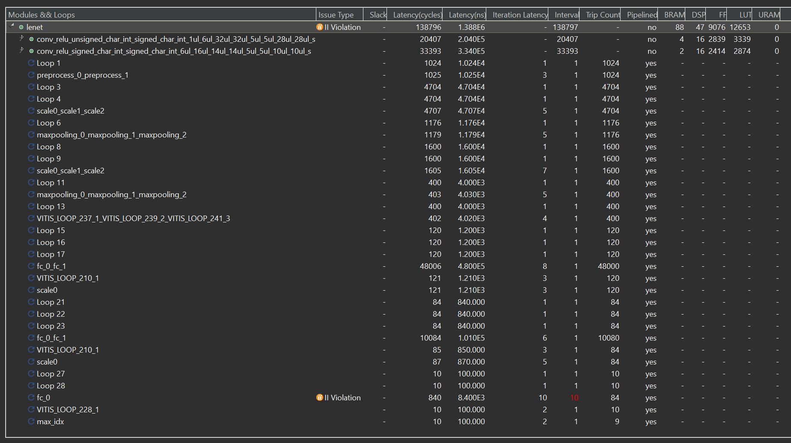
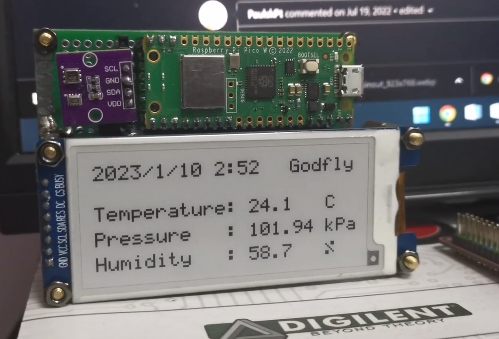
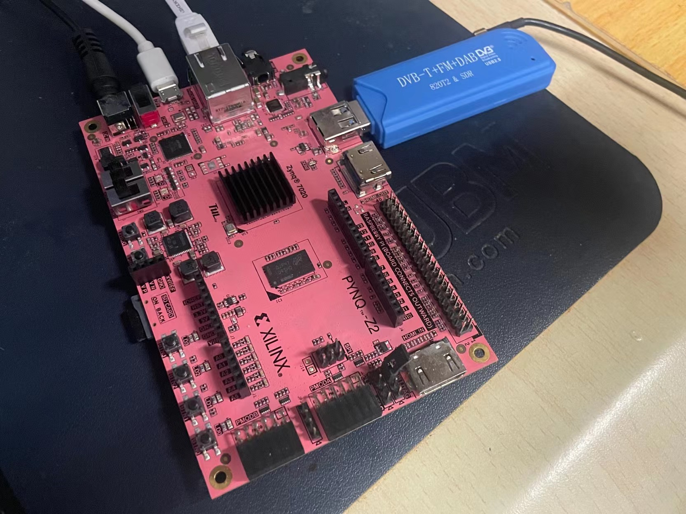

欢迎来到我的个人网站！我是王海飞，一个物理本科生和一个嵌入式软硬件爱好者。
Welcome to my personal website! I am Haifei Wang, a physics student and an embedded software/hardware passionate.
AD9361 is an RF transceiver chip designed by ADI, and has found tremendous applications in software-defined radios (SDR).
PYNQ is a framework that allows users to access the programmable logic from the application level, boosting hardware verification and software development.
In this project, we build a custom Linux Kernel, supporting both PYNQ and AD9361, making it possible to develop high-level applications while utilizing the power and flexibility of heterogeneous platforms.


In this project, we demonstrate a simple implementation of LeNet-5, one of the earliest CNNs. Various hardware acceleration techniques, such as pipelining, partitioning and buffering, are explored.


In this project, we developed a simple driver for the SSD1680 e-ink display. Then, we integrate it with the Raspberry Pi microcontroller and IoT sensors to create a cute little wifi clock.

In this project, we combine an RTL-SDR dongle with the PYNQ-Z2 board to deliver an FM radio receiver application accessible through Jupyter Web Server.
The CPU-intensive parts of the demodulation algorithm, such as phase discrimination and anti-aliasing decimation filtering, are off-loaded to FPGA. As a result, the processors can focus on handling broader applications like web services.

Email: hfwang132@gmail.com
Zhihu: Godfly